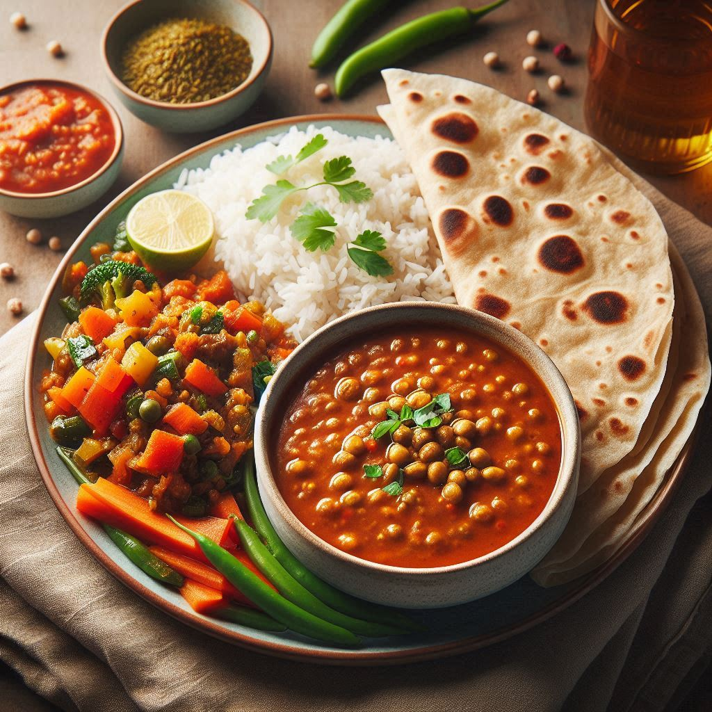

Food Menu
-
Punjabi Thali
A Punjabi Thali featuring Chola Na Partha is a delightful and hearty meal. It includes Chola, a spicy chickpea curry simmered in a flavorful gravy of tomatoes, onions, and aromatic spices, paired with Paratha, a flaky, golden-brown flatbread made from whole wheat flour, sometimes stuffed with potatoes or paneer. Accompaniments include cooling Raita, a yogurt-based side dish mixed with grated vegetables or boondi, seasoned with cumin and salt; tangy and spicy Pickles (Achar) made from preserved vegetables like mango or lime in mustard oil and spices;
-

Dal,chawl and Sabji
Dal Chawal and Sabji is a classic Indian meal combining nutritious lentil stew, steamed rice, and a vegetable dish. Dal, a mildly spiced lentil soup, is rich in flavor and often garnished with fresh cilantro. Chawal, or plain steamed rice, provides a soft and neutral base. Sabji, a spiced vegetable dish, can vary widely, including options like Aloo Gobi or Bhindi Masala, adding variety and depth to the meal. This combination offers a balanced and comforting dining experience. Often accompanied by a side of pickle or papad, it brings together diverse textures and flavors.
-
Uttarpradesh Special
A special meal from Uttar Pradesh includes Bhindi (Ladyfinger) and Roti, offering a superior taste experience. The Bhindi is cooked with a blend of spices such as cumin, coriander, and amchur, creating a flavorful and slightly tangy dish. The Ladyfinger is stir-fried until tender yet crisp, maintaining its natural texture and flavor. Accompanying the Bhindi is soft, warm Roti, made from whole wheat flour, perfectly puffed and slightly charred. The combination of the spicy Bhindi and the simple, wholesome Roti creates a delightful and satisfying meal.
-
Ghee and Paratha
Ghee and Paratha form a delectable and rich pairing in Indian cuisine. Paratha, a flaky and layered flatbread, is made from whole wheat flour and often enriched with a stuffing like potatoes or paneer. It is cooked on a griddle until golden brown and crispy. Ghee, a type of clarified butter, is then generously spread over the hot paratha, enhancing its flavor and adding a luxurious, buttery aroma. The ghee seeps into the layers of the paratha, making it even more tender and flavorful. # Aloo Paratha
-
Fish Fried, Dal and Roti
Fish Fried with Dal and Roti presents a flavorful and satisfying meal. The fish is marinated with a blend of spices and then fried until crispy and golden brown, offering a delightful crunch with every bite. Accompanying this is Dal, a comforting lentil stew rich in flavor and garnished with fresh herbs. Roti, a staple Indian bread made from whole wheat flour, complements the meal with its soft texture and ability to soak up the flavors of the fish and dal.Fish Fried with Dal and Roti presents a flavorful and satisfying meal.
-
Khaman Dhokla
Khaman Dhokla is a traditional Gujarati snack known for its spongy texture and tangy-sweet flavor. Made from fermented chickpea flour (besan), it's seasoned with green chilies, ginger, and sometimes with a tadka (tempering) of mustard seeds and curry leaves. Once steamed, it's garnished with a sprinkling of fresh coriander leaves and grated coconut. The result is a light and airy snack that's both savory and slightly sweet, often served with green chutney or tamarind chutney
-
Pav Bhaji
Pav Bhaji is a beloved Indian street food originating from Mumbai. It consists of a flavorful and spicy vegetable curry made from mashed mixed vegetables such as potatoes, peas, carrots, capsicum, and tomatoes, cooked with a blend of aromatic spices like cumin, coriander, and garam masala. The bhaji is typically served hot, topped with a dollop of butter, finely chopped onions, and fresh coriander leaves. It is accompanied by buttered and lightly toasted pav (soft bread rolls) served on the side.
-
ICE_CREAM
Ice cream is a delightful frozen dessert loved by people of all ages worldwide. It is typically made from a mixture of milk, cream, sugar, and flavorings such as vanilla, chocolate, fruit, or nuts. The ingredients are churned together and frozen to create a creamy texture. Ice cream comes in a variety of flavors and forms, including scoops, bars, sandwiches, and sundaes. It's often enjoyed on its own, as a topping for desserts, or as part of creative concoctions like milkshakes and floats.
-

DESSERT
"Dessert" is a sweet course typically served at the end of a meal to satisfy the palate and provide a satisfying conclusion to dining. Desserts come in a wide array of forms, including cakes, pies, pastries, puddings, ice cream, fruit, and more. They can be decadently rich or refreshingly light, and they often showcase a variety of flavors and textures. Whether homemade or professionally crafted, desserts are enjoyed across cultures and cuisines, often serving as a centerpiece for celebrations and special occasions.